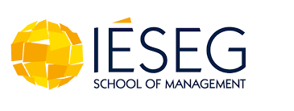

Hi, welcome to my profile
Etudiante en marketing digitale, j'ai plus de 4 années d'expérience professionnel à des fonctions commerciales. Je recherche une opportunité qui me permettrait de m'épanouir professionnellement. Mon objectif? Allié mes connaissances théoriques en marketing à mes connaissances pratique en relation client afin d'offrir l'offre la plus adaptée à vos clients de demain.
Mon atout? Ma capacité d'adaptation!
Mes expériences
Oracle 2020-2022
Commerciale
- Mise en place de la stratégie Social Selling au sein de l’équipe ACS
- Participation au rendez-vous client : comprendre les besoins actuels de notre client et lui proposer une solution adaptée
- Création d’outils d’aide à la vente
Radio France 2019-2020
Média Vendeuse
- Accompagnement des clients tout au long du cycle de vente d’espace publicitaire: identifier les opportunités, comprendre les objectifs des clients, fournir les bons médias, mesurer la couverture médiatique et maintenir le partenariat
- Prospection et relance par téléphone et par mail
- Fournir des rapports quotidiens à ma direction via notre outil CRM (Salesforce)
AG2R La Mondiale 2016-2018
Conseillère clientèle
- Gestion de la relation client au quotidien: répondre aux préoccupations des clients, fournir une assistance et créer des devis
- Participation à l’organisation des campagnes de génération de demandes (phoning et emailing) et suivi reporting
- Organisation de rendez-vous clients: comprendre les besoins actuels et proposer des solutions adaptées
Mes formations
IESEG
Master Marketing Digital
SKEMA
Licence Gestion
Université Evry
DUT TC

Autres
Mes compétences
- Pack Office 360
- CRM: Selligent, SalesForce
- CVaden
Sport
Pratique du Tir à l’arc à un niveau national - Membre de l’équipe départementale et régionale